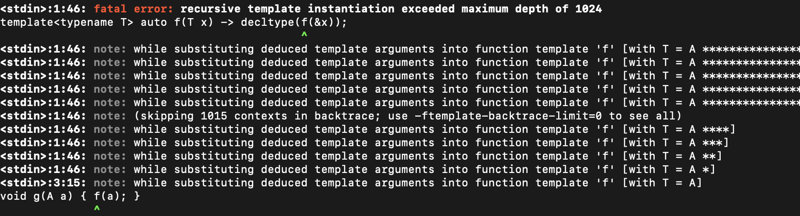
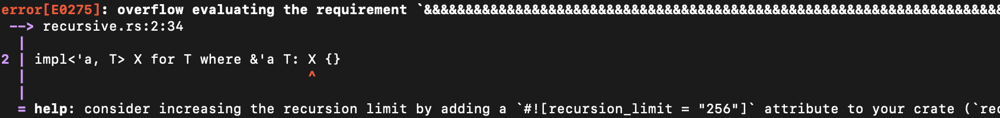

Analyze a protocol and try to compute an efficient set of rewrite rules
Algorithm may give up and may not terminate
Swift compiler provides an iteration limit
Common examples work, but hard to understand and debug failures
Rust
Rust’s approach
Can constrain the value of an associated type
trait Iterator {
type ValueType;
}
trait Container {
type ValueType;
type IteratorType: Iterator<ValueType = Self::ValueType>;
}
Rust’s approach
Unclear what algorithm is used, but like Swift there is a recursion limit
trait Recursive : Sized {
// A.B == B.A
type A: Recursive<B = <Self::B as Recursive>::A>;
// B.A == A.B
type B: Recursive<A = <Self::A as Recursive>::B>;
}
error[E0275]: overflow evaluating the requirement
``<<Self as Recursive>::B as Recursive>::A == _``
No clear guidance on how to write self-referential constraints that work
Consider changing your trait bounds so that they’re less self-referential.
-- Rust documentation
Carbon
Carbon’s approach
Want a decidable, efficient, comprehensible, general rule
Split the problem into two parts
90+%, ergonomic solution to automatically handle easy cases
General solution for the hard cases
Easy cases: member rewrite rules
interface Iterator {
let Element:! type;
}
interface Sequence {
let Element:! type;
// ✅ Sequence.IteratorType.Element = Sequence.Element
let IteratorType:! Iterator
where .Element = Element;
// ❌ Cannot access Sequence.Element because Sequence is not complete
let SubSequence:! Sequence
where .Element = Element and .SubSequence = .Self;
}
When a type variable or associated type is introduced, specify rewrite rules
for its immediate members with where .Member = Value
Cannot constrain members whose type is the enclosing interface
Consequence: all cycles are easily detectable
Consequence: rewrite sequence always terminates
Easy cases: member rewrite rules
interface Iterator {
let Element:! type;
}
interface Sequence {
let Element:! type;
let IteratorType:! Iterator where .Element = Element;
}
interface SliceableSequence {
extend Sequence;
let SubSequence:! Sequence where .IteratorType = IteratorType;
}
impl forall [T:! type] T* as Iterator where .Element = T {}
fn F[C:! SliceableSequence where .IteratorType = i32*](c: C) ->
C.SubSequence.IteratorType.Element;
Example: return type of F is…
C.SubSequence.IteratorType
C.SubSequence.IteratorType
C.IteratorType
(i32*)
.Element
.Element
i32
Easy cases: member rewrite rules
Not all constraints can be written in this way, but most constraints that
we’ve seen in practice can be.
Produces a canonical type that determines the operations and impls available.
Still want an answer for “hard” cases.
Hard cases: single-step equality conversions
interface Container {
// ...
let IteratorType:! Iterator `<0>where .ValueType == ValueType`;
// ...
}
fn AddAndExtract[W:! Widget, C:! Container `<0>where .ValueType == W`](c: C, w: W) {
c.Add(w);
// OK, convert C.IteratorType.ValueType to C.ValueType
let w1: C.ValueType = c.Begin().Deref();
// OK, convert C.ValueType to W
let w2: W = w1;
}
General type equality constraints are written as where T == U
Can implicitly convert between types constrained to be equal
And between (eg) Vector(T) and Vector(U)
Hard cases: single-step equality conversions
interface Container {
// ...
let IteratorType:! Iterator where .ValueType == ValueType;
// ...
}
fn AddAndExtract[W:! Widget, C:! Container where .ValueType == W](c: C, w: W) {
c.Add(w);
// Error, can't convert C.IteratorType.ValueType to W
let w: W = c.Begin().Deref();
}
Do not compute transitive closure of equality rules
Similar to C++’s “at most one user-defined conversion” rule
Hard cases: single-step equality conversions
interface Container {
// ...
let IteratorType:! Iterator where .ValueType == ValueType;
// ...
}
fn AddAndExtract[W:! Widget, C:! Container where .ValueType == W](c: C, w: W) {
c.Add(w);
// OK, equality proof provided by developer
observe C.IteratorType.ValueType == C.ValueType == W;
let w: W = c.Begin().Deref();
}
If more than one equality step is required, must be performed manually
Hard cases: single-step equality conversions
Fully general
Efficient to type-check
Not ergonomic
Not transitive
Summary
Type equality is hard
Swift: type equality is undecidable, hard cases can hit iteration limit
Rust: type equality is undecidable, hard cases can hit iteration limit
Carbon: type equality is decidable, hard cases are less ergonomic
Termination rules are hard
Problem statement
impl forall [T:! type where T* impls Interface] T as Interface;
T implements Interface if T* implements Interface if T** implements Interface if …
Can express arbitrary computation in this way:
() implements TuringMachineHalts(state1, tape1) if () implements TuringMachineHalts(state2, tape2) if …
Ideally, the answer to “Is this a valid program?” should not be ¯\_(ツ)_/¯
Alternative: do nothing
Ignore the problem
Compiler will run out of memory or time out
This appears to be what the Swift compiler currently does
Alternative: recursion limits
This is a familiar problem in C++, with a familiar solution

The same approach is used in Rust

Alternative: recursion limits
Brittle and order-dependent
Not composable
Verbose unhelpful diagnostics
Alternative: disallow recursion
If an impl declaration recursively tries to use itself, reject
Only finitely many impl declarations, so this always halts
Can recurse if sum of ints decreases, even if nothing else changes
Non-type arguments
Proof relies on # labels being finite
… but infinitely many non-type values
Non-integer values are erased prior to the check
Disallow recursion with more complex queries
Good:
Precise errors, no giant stack trace
error: <source>:16: impl matching recursively performed a more complex match
using the same impl: number of ``*``s increasing
outer match: Vector(Vector(i32)) as Hashable
inner match: Vector(Vector(i32)*) as Hashable
Always terminates
No arbitrary limits
Composable and predictable
Can still express any computation with a computable time bound
Bad:
Open question whether this disallows any important use cases
Summary
Terminating type checking is hard
Swift: compilation may time out
C++: recursion limit
Rust: recursion limit
Carbon: always terminating
Carbon rule can be used in other languages
Coherence is hard
What is coherence about?
How much can the meaning of code change when its moved between files?
For example, in C++, the “One Definition Rule” says that the definition of
some entities must match across translation units.
Otherwise, the program is ill-formed, no diagnostic required.
Coherence for generics
Rust enforces “trait coherence”: a given type has at most one implementation
of any trait
A choice, and different languages make different choices
For example, Swift does not enforce coherence
Terminology decoder
Swift
Rust
Carbon
protocol
trait
interface
conformance
implementation (impl)
implementation (impl)
module
crate
library
Swift
Protocol conformance in Swift is not restricted
Module MyGUI defines a protocol Renderable
Module Formatting defines a type FormattedString
Module Widgets defines a conformance for type FormattedString to protocol
Renderable
a retroactive conformance
Application uses module Widgets to put a FormattedString into a dialog box
from MyGUI
User is happy that they can use the MyGUI and Formatting modules together,
even though they were not aware of each other
What if there were two widget modules that did this?
What if two modules provide the same conformance?
Swift compiler tries to statically resolve the protocol implementation
Each module uses its own conformance
So far, no problem
Problems arise
What if the protocol was Hashable?
Now two ways to hash a single type
Dictionary<AnyHashable, Int>
Two entries in the hash table for the same value?
Can’t find a value in the table?
Hard to trigger this in practice
Have to pass objects between unrelated modules
Problems arise
Having two retroactive conformances can cause similar problems in other
situations
Dynamic type test might find a different conformance of a type to a protocol
Some “foundation” types have their code compiled into shared objects provided
by the OS
Conformances can live in both the shared object and the application
The problem is that due to coherence, the ability to define impls is a
zero-sum game: every impl that is legal to add in a child crate is also an
impl that a parent crate cannot add without fear of breaking downstream
crates.
Generic types, traits, and implementations
Things get more complicated when talking about generic (meaning
“parameterized”) types, traits, and implementations
Particularly if you want to allow libraries to evolve
The problem is that due to coherence, the ability to define impls is a
zero-sum game: every impl that is legal to add in a child crate is also an
impl that a parent crate cannot add without fear of breaking downstream
crates.
Blanket implementations
Consider an implementation of the Hash trait for any type that implements
Serialize
impl<T> Hash for T where T: Serialize
This is called a blanket implementation
Must be defined in the crate with the Hash trait
Compiler will reject two different blanket implementations for the Hash
trait when compiling the crate defining Hash
Otherwise there might be a type where both blanket implementations apply,
breaking the overlap rule
Blanket implementations and evolution
A blanket implementation for trait Hash means no other crate can define
implementations of Hash for any type implementing Serialize
Fine if the blanket implementation is created at the same time as the trait
Adding a blanket implementation later might break downstream dependencies /
child crates
a backwards-incompatible change
Issue: no way to pick between conflicting implementations
So far no specialization rule in stable Rust
With a specialization rule, a more-specific implementation in a child crate
would override instead of conflicting with the blanket implementation
A specialization rule can be coherent as long as the specific implementation
chosen for a trait and type combination is the same across the whole program
Rust’s coherence rules have some complexity
Rust’s orphan and overlap rules have
evolved with time to
allow more implementations to be written
The order of parameters can matter
The “first” local type has to “cover” earlier types
Different rules for “fundamental” types and traits
import GUI;
import Formatting;
class FormattedString {
`<2>extend` `<0>adapt Formatting.FormattedString;`
}
impl `<3>FormattedString` as GUI.Renderable { ... }
fn Run() {
var t: `<1>FormattedString = Formatting.FormattedString.Make("...")`;
GUI.DrawAt(200, 100, &t);
}
There are other ways of addressing this problem
Options for the future if this isn’t enough
“This library must be imported (or is automatically imported) anytime these
two others are”
Would have to be part of a consistent configuration of the whole binary
Similar concern: low level library exports API but does not provide an
implementation for it
Example: memory allocator, logger
Could be used to break dependency cycles
In C++ this can be sorted out at link time
In Rust, libraries can use
Cargo “features” to
optionally depend on another library, and conditionally compile the
implementation of a trait in that other library
Different solutions to coherence
C++: the one definition rule (ODR)
violations leave the program ill-formed, no diagnostic required
Swift: no coherence
has the “what if two modules did that?” problem
adding a warning
Rust: enforced coherence
complex, restrictive rules to ensure no overlap between implementations
Carbon: enforced coherence
simpler, more permissive rules
overlap resolved by a specialization rule
Specialization is hard
What is specialization?
Have multiple applicable implementations, and we pick the most specific
For example, the implementation of the Sort interface does one thing for
linked lists and another for containers that offer random access
Specialization support across languages
C++: supports specialization, including partial specialization
Rust: not supported yet, long-term effort
Swift: no planned conformance specialization
C++
Specialization is important for performance
“Is more specific” rule is not a total order
Can get an error if there is ambiguity between which of two specializations to
pick
Rust considering impl specialization for a long time
Been discussed as early as 2015
A version of specialization has been in unstable Rust since 2016
(Rust RFC 1210)
The current plan is to dramatically relax these [overlap] rules with a feature
called “specialization”.
Hard to add specialization without breaking existing code
trait A {
type Out;
}
impl<T> A for T {
type `<0>Out = i32`;
}
fn f<T>(_x: T) -> `<0><T as A>::Out` {
return 3;
}
Hard to add specialization without breaking existing code
trait A {
type Out;
}
impl<T> A for T {
type Out = i32;
}
fn f<T>(_x: T) -> <T as A>::Out {
return 3;
}
struct S {}
impl A for S {
type `Out = bool`;
}
Hard to add specialization without breaking existing code
Means specialization has to be added opt-in
Much easier to include specialization from the start
Large design space
Lots of choices for defining “more specialized”
implementations match a subset of types?
in a child crate?
final implementations are more specific than default implementations
Can restrict relationships between implementations
tree: require that implementations either have no overlap, or are properly
contained
lattice: require that the intersection implementation exists for every pair
of overlapping implementations
Many others have been considered
Desirable properties
Coherence
Always pick the same specialization for a given type and interface
combination, no matter what file
Composition
Can mix and match libraries without ending up with ambiguity about which
implementation will be chosen
Carbon’s solution
Total “more specific” ordering
Has a tie-breaking rule so all implementations can be compared
Enables composition:
Adding implementations never makes implementation selection ambiguous
Ordering uses the type structure of impl declarations
erase type parameters
just like with Carbon’s orphan rule
Type structure rule
Erasing type parameters from the impl declaration
impl forall [T:! Printable] Vector(`<1>T`) as Printable
becomes:
Vector(`<1>❓`) as Printable
Type structure rule
Erasing type parameters from the impl declaration
impl forall [T:! Ordered] `<1>T` as PartiallyOrdered
becomes:
`<1>❓` as PartiallyOrdered
Type structure rule
Erasing type parameters from the impl declaration
impl forall [U:! type, T:! As(U)] Optional(`<1>T`) as As(Optional(`<1>U`))
becomes:
Optional(`<1>❓`) as As(Optional(`<1>❓`))
Type structure rule
Erasing type parameters from the impl declaration
impl forall [T:! type] `<1>T` as CommonType(`<1>T`)
becomes:
`<1>❓` as CommonType(`<1>❓`)
Which type structure is more specific?
Rule: look at the first difference (reading left-to-right). One will have the
type matching the query, one will have ❓. Prefer the first.
`<1>BigInt` as AddWith(❓)
is more specific than:
`<1>❓` as AddWith(BigInt)
Which type structure is more specific?
Rule: look at the first difference (reading left-to-right). One will have the
type matching the query, one will have ❓. Prefer the first.
Vector(`<1>bool`) is AddWith(❓)
is more specific than:
Vector(`<1>❓`) is AddWith(❓)
Which type structure is more specific?
Rule: look at the first difference (reading left-to-right). One will have the
type matching the query, one will have ❓. Prefer the first.
Vect3D is AddWith(`<1>Vect3D`)
is more specific than:
Vect3D is AddWith(`<1>❓`)
This rule breaks ties by the order of the parameters
import IntLib;
class `<0>BigInt`;
impl `<2>BigInt as IntLib.IntLike`;
impl forall [T:! IntLib.IntLike]
`<3>BigInt as AddWith(T)`;
impl forall [T:! IntLib.IntLike]
`<4>T as AddWith(BigInt)`;
import IntLib;
class `<1>FancyInt`;
impl `<2>FancyInt as IntLib.IntLike`;
impl forall [T:! IntLib.IntLike]
`<3>FancyInt as AddWith(T)`;
impl forall [T:! IntLib.IntLike]
`<4>T as AddWith(FancyInt)`;
let b: BigInt = ...;
let f: FancyInt = ...;
let x: auto = b + f;
let y: auto = f + b;
This rule breaks ties by the order of the parameters
import IntLib;
class BigInt;
impl BigInt as IntLib.IntLike;
impl forall [T:! IntLib.IntLike]
BigInt as AddWith(T);
impl forall [T:! IntLib.IntLike]
T as AddWith(BigInt);
import IntLib;
class FancyInt;
impl FancyInt as IntLib.IntLike;
impl forall [T:! IntLib.IntLike]
FancyInt as AddWith(T);
impl forall [T:! IntLib.IntLike]
T as AddWith(FancyInt);
let b: BigInt = ...;
let f: FancyInt = ...;
// Uses ``BigInt as AddWith(❓)``
let x: auto = `b + f`;
let y: auto = f + b;
Uses BigInt as AddWith(❓)
This rule breaks ties by the order of the parameters
import IntLib;
class BigInt;
impl BigInt as IntLib.IntLike;
impl forall [T:! IntLib.IntLike]
BigInt as AddWith(T);
impl forall [T:! IntLib.IntLike]
T as AddWith(BigInt);
import IntLib;
class FancyInt;
impl FancyInt as IntLib.IntLike;
impl forall [T:! IntLib.IntLike]
FancyInt as AddWith(T);
impl forall [T:! IntLib.IntLike]
T as AddWith(FancyInt);
let b: BigInt = ...;
let f: FancyInt = ...;
// Uses ``BigInt as AddWith(❓)``
let x: auto = b + f;
// Uses ``FancyInt as AddWith(❓)``
let y: auto = `f + b`;
Uses FancyInt as AddWith(❓)
What if they have the same type structure?
Ask the user to manually prioritize between all impl declarations with the
same type structure
Gives the user control and often what they want
Scales much better than defining all the intersections
The orphan rule for coherence guarantees they must all be in the same library!
Specialization simplifies coherence and coherence simplifies
specialization
Local check for the compiler
Specialization summary
Total ordering
means
no ambiguity when picking an implementation specialization
means
can compose libraries safely
C++ and Carbon both support specialization
It is hard to retroactively add impl specialization to a language
Specialization helps with both coherence and performance
Total “more specific” order => no ambiguity when picking an implementation
specialization => allows composition of libraries
Compositional: can combine libraries without worrying about introducing ambiguity
No way for additional specializations to create ambiguity
If the type checker sees that an implementation applies, can assume some
implementation exists, even if it might be a more specialized implementation
instead
Convenient and expected by users
Otherwise implementation details become viral requirements that leak into
APIs
If you can see an implementation, an implementation must exist
interface RepresentationOfOptional;
impl `forall [T:! Move] T as RepresentationOfOptional`;
class Optional(`T:! Move`) {
var repr: `T.(RepresentationOfOptional.ReprType)`;
}
Allows other types to customize their Optional representation
Users of Optional need not be concerned with implementation details like
RepresentationOfOptional
The language foundations that support checked generics
Generics imposes constraints on the rest of the language
Carbon is using different foundations than are present in C++
Checked generics need: Name lookup isn’t very context-sensitive
Helpful for readers of the code
Necessary if you want code to have the same meaning whether it is generic or
not
To be able to type check a function call, must be able to say what its
signature is
Carbon has package namespacing, no
argument-dependent lookup,
and no open overloading to reduce context-sensitivity
Checked generics need: no ad-hoc specialization
How can we type check code using vector<T> without knowing T if its API
changes when T==bool?
Checked generics need: no circular dependencies
Shows up in unexpected ways in Carbon’s specialization support
Checked generics need: coherence
Coherence is something that Carbon takes seriously even outside the context of
generics
We don’t want the meaning of code to change if an import is added
We think it makes code much easier to understand and manage at scale
Coherence and specialization are both good; they work even better together
Checked generics need: simplification
Carbon’s interface implementation is its only mechanism for open extension,
and its only mechanism for specialization
Means there is only one way to overload an operator, iterate through a
container, and so on
Simplicity elsewhere in the language, particularly in the type system, reduces
complexity of checked generics geometrically
Conclusion
Talked about four problems
Carbon has new solutions to:
Type equality
Termination rules
Coherence
Specialization
Plus non-generics parts of the language that supports checked generics.
Other problems?
Checked generics are an active area of research
There are a lot more problems than those covered in this talk
Checked variadic generics
Generic associated types
Interaction between checked and template generics
Interaction between generics and implicit conversions
Checked generics are an active area of research
There are a lot more problems than those covered in this talk